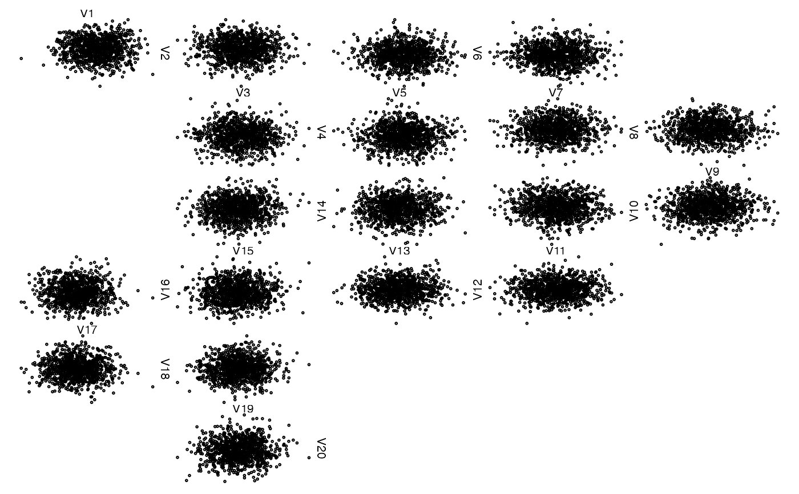

Convert an occupancy matrix to matrix with different symbols.
convert_occupancy(x, to = c("", "<", ">", "v", "^"))matrix as the occupancy matrix but with entries replaced
by those in to.
Other zenplot technical tools:
is.standard(),
n2dcols_aux(),
num_cols(),
turn_checker()
## Generate some data
n <- 1000 # sample size
d <- 20 # dimension
set.seed(271) # set seed (for reproducibility)
x <- matrix(rnorm(n * d), ncol = d) # i.i.d. N(0,1) data
## Extract the occupancy matrix from a zenplot
res <- zenplot(x)

(occ <- res[["path"]][["occupancy"]])
#> [,1] [,2] [,3] [,4] [,5] [,6] [,7] [,8] [,9]
#> [1,] "d" "" "" "" "" "" "" "" ""
#> [2,] "r" "r" "d" "" "r" "r" "d" "" ""
#> [3,] "" "" "d" "" "u" "" "d" "" ""
#> [4,] "" "" "r" "r" "u" "" "r" "r" "d"
#> [5,] "" "" "" "" "" "" "" "" "d"
#> [6,] "" "" "d" "l" "l" "" "d" "l" "l"
#> [7,] "" "" "d" "" "u" "" "d" "" ""
#> [8,] "d" "l" "l" "" "u" "l" "l" "" ""
#> [9,] "d" "" "" "" "" "" "" "" ""
#> [10,] "r" "r" "d" "" "" "" "" "" ""
#> [11,] "" "" "d" "" "" "" "" "" ""
#> [12,] "" "" "r" "r" "" "" "" "" ""
## Convert the occupancy matrix
convert_occupancy(occ)
#> [,1] [,2] [,3] [,4] [,5] [,6] [,7] [,8] [,9]
#> [1,] "v" "" "" "" "" "" "" "" ""
#> [2,] ">" ">" "v" "" ">" ">" "v" "" ""
#> [3,] "" "" "v" "" "^" "" "v" "" ""
#> [4,] "" "" ">" ">" "^" "" ">" ">" "v"
#> [5,] "" "" "" "" "" "" "" "" "v"
#> [6,] "" "" "v" "<" "<" "" "v" "<" "<"
#> [7,] "" "" "v" "" "^" "" "v" "" ""
#> [8,] "v" "<" "<" "" "^" "<" "<" "" ""
#> [9,] "v" "" "" "" "" "" "" "" ""
#> [10,] ">" ">" "v" "" "" "" "" "" ""
#> [11,] "" "" "v" "" "" "" "" "" ""
#> [12,] "" "" ">" ">" "" "" "" "" ""